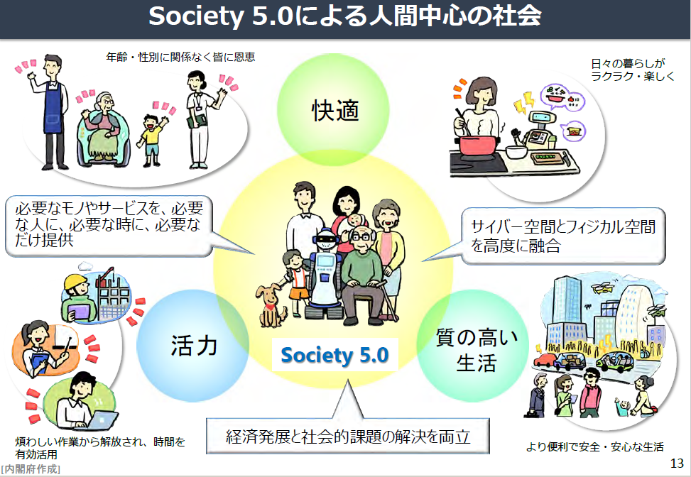

これまでの社会では、経済や組織といったシステムが優先され、個々の能力などに応じて個人が受けるモノやサービスに格差が生じている面がありました。Society 5.0では、ビッグデータを踏まえたAIやロボットが今まで人間が行っていた作業や調整を代行・支援するため、日々の煩雑で不得手な作業などから解放され、誰もが快適で活力に満ちた質の高い生活を送ることができるようになります。
これは一人一人の人間が中心となる社会であり、決してAIやロボットに支配され、監視されるような未来ではありません。また、我が国のみならず世界の様々な課題の解決にも通じるもので、国連の「持続可能な開発目標」(Sustainable Development Goals：SDGs)の達成にも通じるものです。
我が国は、先端技術をあらゆる産業や社会生活に取り入れ、イノベーションから新たな価値が創造されることにより、誰もが快適で活力に満ちた質の高い生活を送ることのできる人間中心の社会「Society 5.0」を世界に先駆けて実現していきます。

新たな価値の事例（交通）
新たな価値の事例（医療・介護）
新たな価値の事例（ものづくり）
新たな価値の事例（農業）
新たな価値の事例（食品）
新たな価値の事例（防災）
新たな価値の事例（エネルギー）